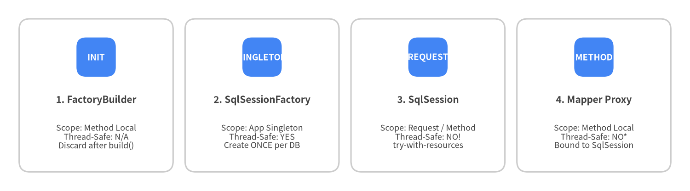
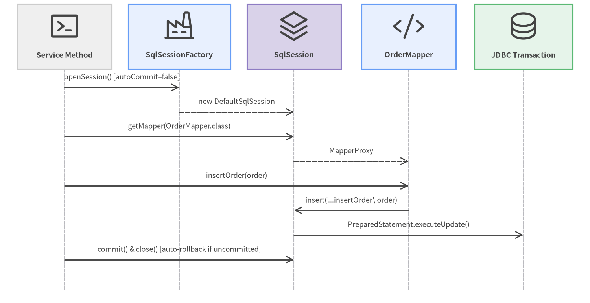

1. Installation & SqlSession Lifecycle
Mastering MyBatis begins with understanding the four core lifecycle objects (SqlSessionFactoryBuilder, SqlSessionFactory, SqlSession, and Mapper proxies) and their strict thread-safety and scope boundaries.
Maven & Gradle Coordinates
MyBatis 3 (org.mybatis:mybatis:3.6.0) has zero required external runtime dependencies on JDK 17+. Pair it with your JDBC driver and optional connection pool (such as HikariCP) or logging framework (SLF4J):
Maven (pom.xml)
<dependencies>
<!-- MyBatis 3 Core -->
<dependency>
<groupId>org.mybatis</groupId>
<artifactId>mybatis</artifactId>
<version>3.6.0</version>
</dependency>
<!-- Production Connection Pool (Recommended) -->
<dependency>
<groupId>com.zaxxer</groupId>
<artifactId>HikariCP</artifactId>
<version>6.2.1</version>
</dependency>
<!-- Example JDBC Driver (PostgreSQL) -->
<dependency>
<groupId>org.postgresql</groupId>
<artifactId>postgresql</artifactId>
<version>42.7.5</version>
</dependency>
</dependencies>
Gradle (build.gradle.kts)
dependencies {
implementation("org.mybatis:mybatis:3.6.0")
implementation("com.zaxxer:HikariCP:6.2.1")
runtimeOnly("org.postgresql:postgresql:42.7.5")
}
Scope & Thread-Safety Rules
The single most important operational rule in MyBatis is matching each core object to its proper lifecycle scope:

Source Code
from drawlib.canvas import save, setup
from drawlib.smartarts import CardList
from drawlib.styles import Colors, Styles
setup(width=144, height=40, dpi=150)
cards = CardList(
style=Styles.Neutral.patch(shape_fill_color=Colors.White),
text_style=Styles.DarkBold.patch(text_size=10.0),
description_style=Styles.Dark.patch(text_size=8.6),
badge_shape="rounded_rect",
badge_style=Styles.PrimaryFlat,
badge_text_style=Styles.WhiteBold.patch(text_size=9.0),
direction="horizontal",
spacing=2.5,
)
cards.add("1. FactoryBuilder", "Scope: Method Local\nThread-Safe: N/A\nDiscard after build()", badge_text="INIT")
cards.add("2. SqlSessionFactory", "Scope: App Singleton\nThread-Safe: YES\nCreate ONCE per DB", badge_text="SINGLETON")
cards.add("3. SqlSession", "Scope: Request / Method\nThread-Safe: NO!\ntry-with-resources", badge_text="REQUEST")
cards.add("4. Mapper Proxy", "Scope: Method Local\nThread-Safe: NO*\nBound to SqlSession", badge_text="METHOD")
cards.draw((4.0, 4.0), width=136.0, height=32.0, align="bottom_left")
save()
| Component | Recommended Scope | Thread-Safe? | Rationale |
|---|---|---|---|
SqlSessionFactoryBuilder |
Method local (startup) | N/A | Only needed to parse configuration and return a SqlSessionFactory. |
SqlSessionFactory |
Application Singleton | Yes | Holds the immutable-at-runtime Configuration registry. Never rebuild per request. |
SqlSession |
Request / Method (try-with-resources) |
No | Holds a stateful Executor, non-thread-safe L1 PerpetualCache, and a JDBC Connection. |
Mapper proxy (session.getMapper(...)) |
Method local | No (when bound to DefaultSqlSession) |
Delegates calls directly to its enclosing SqlSession. (Thread-safe only when wrapped by SqlSessionManager or Spring's SqlSessionTemplate). |
Building SqlSessionFactory
You can bootstrap SqlSessionFactory either from an XML file (mybatis-config.xml) or programmatically in Java.
Option A: From XML (Resources.getResourceAsReader)
import java.io.Reader;
import org.apache.ibatis.io.Resources;
import org.apache.ibatis.session.SqlSessionFactory;
import org.apache.ibatis.session.SqlSessionFactoryBuilder;
String resource = "org/example/persistence/mybatis-config.xml";
try (Reader reader = Resources.getResourceAsReader(resource)) {
SqlSessionFactory sqlSessionFactory = new SqlSessionFactoryBuilder().build(reader);
}
Option B: Programmatic Java Configuration (HikariCP + Mappers)
import com.zaxxer.hikari.HikariConfig;
import com.zaxxer.hikari.HikariDataSource;
import javax.sql.DataSource;
import org.apache.ibatis.mapping.Environment;
import org.apache.ibatis.session.Configuration;
import org.apache.ibatis.session.LocalCacheScope;
import org.apache.ibatis.session.SqlSessionFactory;
import org.apache.ibatis.session.SqlSessionFactoryBuilder;
import org.apache.ibatis.transaction.jdbc.JdbcTransactionFactory;
HikariConfig hikari = new HikariConfig();
hikari.setJdbcUrl("jdbc:postgresql://localhost:5432/blog");
hikari.setUsername("app_user");
hikari.setPassword(System.getenv("DB_PASSWORD"));
DataSource dataSource = new HikariDataSource(hikari);
Environment environment = new Environment("production", new JdbcTransactionFactory(), dataSource);
Configuration configuration = new Configuration(environment);
configuration.setMapUnderscoreToCamelCase(true);
configuration.setLocalCacheScope(LocalCacheScope.STATEMENT); // Recommended for multi-service deployments
configuration.addMappers("com.example.blog.mapper"); // Registers all Mapper interfaces + XML in package
SqlSessionFactory sqlSessionFactory = new SqlSessionFactoryBuilder().build(configuration);
Executing Statements with try-with-resources
Every SqlSession implements java.lang.AutoCloseable. By default, sqlSessionFactory.openSession() opens a session with autoCommit = false. If a try-with-resources block exits without calling session.commit(), MyBatis automatically rolls back any uncommitted changes before returning the connection to the pool.

Source Code
from drawlib.canvas import save, setup
from drawlib.diagrams.sequence import Participant, PhosphorIcon, SequenceDiagram
from drawlib.styles import Styles
setup(width=144, height=74, dpi=150)
sd = SequenceDiagram(
node_style=Styles.Dark,
node_text_style=Styles.DarkBold.patch(text_size=9.2),
edge_style=Styles.Dark.patch(line_width=1.4),
edge_text_style=Styles.Dark.patch(text_size=8.8),
node_card_style=Styles.Neutral,
col_width=28.0,
step_y=6.0,
)
p_app = sd.add(Participant("Service Method", icon=PhosphorIcon.TERMINAL_WINDOW, width=23, card_style=Styles.Neutral))
p_fac = sd.add(Participant("SqlSessionFactory", icon=PhosphorIcon.FACTORY, width=25, card_style=Styles.PrimaryNeutral))
p_ses = sd.add(Participant("SqlSession", icon=PhosphorIcon.STACK, width=23, card_style=Styles.SecondaryNeutral))
p_map = sd.add(Participant("OrderMapper", icon=PhosphorIcon.CODE, width=23, card_style=Styles.PrimaryNeutral))
p_db = sd.add(Participant("JDBC Transaction", icon=PhosphorIcon.DATABASE, width=24, card_style=Styles.SuccessNeutral))
p_app.request(p_fac, "openSession() [autoCommit=false]")
p_fac.reply(p_ses, "new DefaultSqlSession")
p_app.request(p_ses, "getMapper(OrderMapper.class)")
p_ses.reply(p_map, "MapperProxy")
p_app.request(p_map, "insertOrder(order)")
p_map.request(p_ses, "insert('...insertOrder', order)")
p_ses.request(p_db, "PreparedStatement.executeUpdate()")
p_app.request(p_ses, "commit() & close() [auto-rollback if uncommitted]")
sd.draw(xy=(72, 37), align="center")
save()
// Write transaction pattern: explicit session.commit() required
try (SqlSession session = sqlSessionFactory.openSession()) {
OrderMapper mapper = session.getMapper(OrderMapper.class);
mapper.insertOrder(order);
mapper.insertOrderItems(order.items());
session.commit(); // Commits both statements atomically; if exception occurs above, close() rolls back!
}